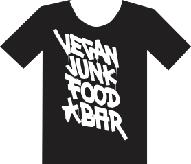
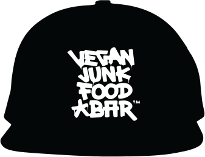

De Kledinglijn bij de VJFB
Bij de Vegan Junkfood Bar kan je ook merchendise kopen van hun restaurant. Deze kleding is erg leuk, maar toen ik keek waar het uitgemaakt was bleek het vooral uit katoen en polyester gemaakt te zijn. Deze twee stoffen zijn niet erg duurzaam, wat toch wat jammer is.


Ik had ze gemaild of ze nog wat uitleg hierover konden geven, maar heb helaas nikst terug gegeven. Natuurijk is dit een kleine factor en zijn ze al erg duurzaam zijn er natuurlijk altijd verbeter punten.